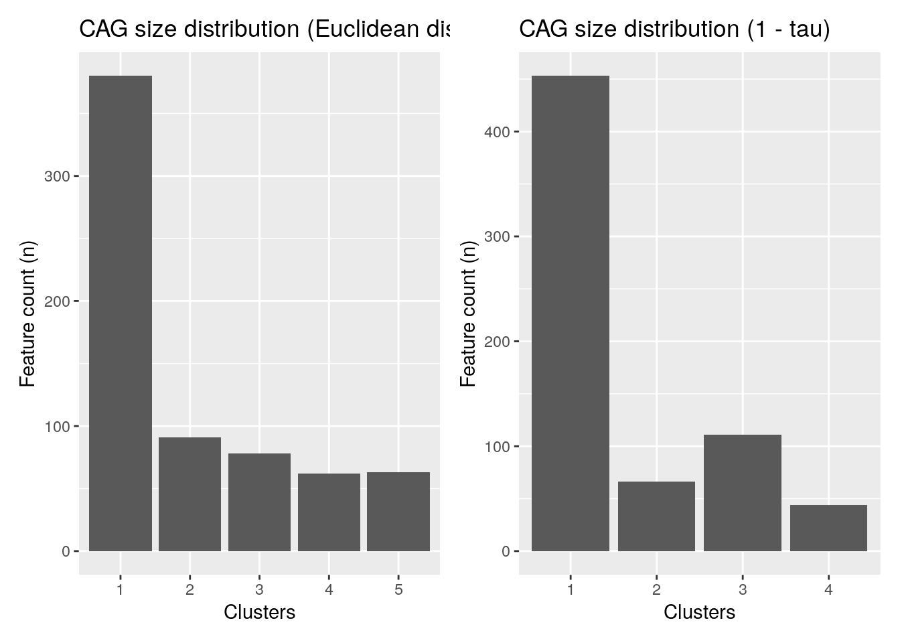

Chapter 6 Taxonomic Information
Taxonomic information is a key part of analyzing microbiome data and without it, any type of data analysis probably will not make much sense. However, the degree of detail of taxonomic information differs depending on the dataset and annotation data used.
Therefore, the mia package expects a loose assembly of taxonomic information and assumes certain key aspects:
- Taxonomic information is given as character vectors or factors in the
rowDataof aSummarizedExperimentobject. - The columns containing the taxonomic information must be named
domain,kingdom,phylum,class,order,family,genus,speciesor with a capital first letter. - the columns must be given in the order shown above
- column can be omited, but the order must remain
In this chapter, we will refer to co-abundant groups as CAGs, which are clusters of taxa that co-vary across samples.
6.1 Assigning taxonomic information.
There are a number of methods to assign taxonomic information. We like to give a short introduction about the methods available without ranking one over the other. This has to be your choice based on the result for the individual dataset.
6.1.1 dada2
The dada2 package (Benjamin J. Callahan et al. 2016) implements the assignTaxonomy
function, which takes as input the ASV sequences associated with each
row of data and a training dataset. For more information visit the
dada2 homepage.
6.1.2 DECIPHER
The DECIPHER package (Wright 2020) implements the IDTAXA algorithm to assign
either taxonomic information or function information. For mia
only the first option is of interest for now and more information can be
found on the DECIPHER website.
6.2 Functions to access taxonomic information
checkTaxonomy checks whether the taxonomic information is usable for mia
## [1] TRUESince the rowData can contain other data, taxonomyRanks will return the
columns mia assumes to contain the taxonomic information.
## [1] "Kingdom" "Phylum" "Class" "Order" "Family" "Genus" "Species"This can then be used to subset the rowData to columns needed.
## DataFrame with 19216 rows and 7 columns
## Kingdom Phylum Class Order Family
## <character> <character> <character> <character> <character>
## 549322 Archaea Crenarchaeota Thermoprotei NA NA
## 522457 Archaea Crenarchaeota Thermoprotei NA NA
## 951 Archaea Crenarchaeota Thermoprotei Sulfolobales Sulfolobaceae
## 244423 Archaea Crenarchaeota Sd-NA NA NA
## 586076 Archaea Crenarchaeota Sd-NA NA NA
## ... ... ... ... ... ...
## 278222 Bacteria SR1 NA NA NA
## 463590 Bacteria SR1 NA NA NA
## 535321 Bacteria SR1 NA NA NA
## 200359 Bacteria SR1 NA NA NA
## 271582 Bacteria SR1 NA NA NA
## Genus Species
## <character> <character>
## 549322 NA NA
## 522457 NA NA
## 951 Sulfolobus Sulfolobusacidocalda..
## 244423 NA NA
## 586076 NA NA
## ... ... ...
## 278222 NA NA
## 463590 NA NA
## 535321 NA NA
## 200359 NA NA
## 271582 NA NAtaxonomyRankEmpty checks for empty values in the given rank and returns a
logical vector of length(x).
## [1] TRUE##
## FALSE TRUE
## 8008 11208##
## FALSE TRUE
## 1413 17803getTaxonomyLabels is a multi-purpose function, which turns taxonomic
information into a character vector of length(x)
## [1] "Class:Thermoprotei" "Class:Thermoprotei_1"
## [3] "Species:Sulfolobusacidocaldarius" "Class:Sd-NA"
## [5] "Class:Sd-NA_1" "Class:Sd-NA_2"By default, this will use the lowest non-empty information to construct a
string with the following scheme level:value. If all levels are the same,
this part is omitted, but can be added by setting with_rank = TRUE.
phylum <- !is.na(rowData(tse)$Phylum) &
vapply(data.frame(apply(rowData(tse)[, taxonomyRanks(tse)[3:7]], 1L, is.na)), all, logical(1))
head(getTaxonomyLabels(tse[phylum,]))## [1] "Crenarchaeota" "Crenarchaeota_1" "Crenarchaeota_2" "Actinobacteria"
## [5] "Actinobacteria_1" "Spirochaetes"## [1] "Phylum:Crenarchaeota" "Phylum:Crenarchaeota_1"
## [3] "Phylum:Crenarchaeota_2" "Phylum:Actinobacteria"
## [5] "Phylum:Actinobacteria_1" "Phylum:Spirochaetes"By default the return value of getTaxonomyLabels contains only
unique elements by passing it through make.unique. This step can be
omitted by setting make_unique = FALSE.
## [1] "Phylum:Crenarchaeota" "Phylum:Crenarchaeota" "Phylum:Crenarchaeota"
## [4] "Phylum:Actinobacteria" "Phylum:Actinobacteria" "Phylum:Spirochaetes"To apply the loop resolving function resolveLoop from the
TreeSummarizedExperiment package (Huang 2020) within
getTaxonomyLabels, set resolve_loops = TRUE.
The function getUniqueFeatures gives a list of unique taxa for the
specified taxonomic rank.
## [1] "Crenarchaeota" "Euryarchaeota" "Actinobacteria" "Spirochaetes"
## [5] "MVP-15" "Proteobacteria"6.2.1 Generate a taxonomic tree on the fly
To create a taxonomic tree, taxonomyTree used the information and returns a
phylo object. Duplicate information from the rowData is removed.
##
## Phylogenetic tree with 1645 tips and 1089 internal nodes.
##
## Tip labels:
## Species:Cenarchaeumsymbiosum, Species:pIVWA5, Species:CandidatusNitrososphaeragargensis, Species:SCA1145, Species:SCA1170, Species:Sulfolobusacidocaldarius, ...
## Node labels:
## root:ALL, Kingdom:Archaea, Phylum:Crenarchaeota, Class:C2, Class:Sd-NA, Class:Thaumarchaeota, ...
##
## Rooted; includes branch lengths.## class: TreeSummarizedExperiment
## dim: 19216 26
## metadata(0):
## assays(1): counts
## rownames(19216): Class:Thermoprotei Class:Thermoprotei ... Phylum:SR1
## Phylum:SR1
## rowData names(7): Kingdom Phylum ... Genus Species
## colnames(26): CL3 CC1 ... Even2 Even3
## colData names(7): X.SampleID Primer ... SampleType Description
## reducedDimNames(0):
## mainExpName: NULL
## altExpNames(0):
## rowLinks: a LinkDataFrame (19216 rows)
## rowTree: 1 phylo tree(s) (1645 leaves)
## colLinks: NULL
## colTree: NULLThe implementation is based on the toTree function from the
TreeSummarizedExperiment package (Huang 2020).
6.3 Data agglomeration
One of the main applications of taxonomic information in regards to count data
is to agglomerate count data on taxonomic levels and track the influence of
changing conditions through these levels. For this mia contains the
mergeFeaturesByRank function. The ideal location to store the agglomerated data
is as an alternative experiment.
tse <- transformAssay(tse, assay.type = "counts", method = "relabundance")
altExp(tse, "Family") <- mergeFeaturesByRank(tse, rank = "Family",
agglomerateTree = TRUE)
altExp(tse, "Family")## class: TreeSummarizedExperiment
## dim: 603 26
## metadata(1): agglomerated_by_rank
## assays(2): counts relabundance
## rownames(603): Class:Thermoprotei Family:Sulfolobaceae ...
## Family:Thermodesulfobiaceae Phylum:SR1
## rowData names(7): Kingdom Phylum ... Genus Species
## colnames(26): CL3 CC1 ... Even2 Even3
## colData names(7): X.SampleID Primer ... SampleType Description
## reducedDimNames(0):
## mainExpName: NULL
## altExpNames(0):
## rowLinks: a LinkDataFrame (603 rows)
## rowTree: 1 phylo tree(s) (496 leaves)
## colLinks: NULL
## colTree: NULLIf multiple assays (counts and relabundance) exist, both will be agglomerated.
## [1] "counts" "relabundance"## [1] "counts" "relabundance"## CL3 CC1 SV1 M31Fcsw M11Fcsw M31Plmr M11Plmr
## Class:Thermoprotei 0.0000000 0.000e+00 0 0 0 0 0.000e+00
## Family:Sulfolobaceae 0.0000000 0.000e+00 0 0 0 0 2.305e-06
## Class:Sd-NA 0.0000000 0.000e+00 0 0 0 0 0.000e+00
## Order:NRP-J 0.0001991 2.070e-04 0 0 0 0 6.914e-06
## Family:SAGMA-X 0.0000000 6.165e-06 0 0 0 0 0.000e+00## CL3 CC1 SV1 M31Fcsw M11Fcsw M31Plmr M11Plmr
## Class:Thermoprotei 0 0 0 0 0 0 0
## Family:Sulfolobaceae 0 0 0 0 0 0 1
## Class:Sd-NA 0 0 0 0 0 0 0
## Order:NRP-J 172 235 0 0 0 0 3
## Family:SAGMA-X 0 7 0 0 0 0 0altExpNames now consists of Family level data. This can be extended to use
any taxonomic level listed in mia::taxonomyRanks(tse).
Rare taxa can also be aggregated into a single group “Other” instead of
filtering them out. A suitable function for this is mergeFeaturesByPrevalence.
The number of rare taxa is higher on the species level, which causes the need
for data agglomeration by prevalence.
altExp(tse, "Species_byPrevalence") <- mergeFeaturesByPrevalence(tse,
rank = "Species",
other_label = "Other",
prevalence = 5 / 100,
detection = 1 / 100,
as_relative = T)
altExp(tse, "Species_byPrevalence")## class: TreeSummarizedExperiment
## dim: 113 26
## metadata(2): agglomerated_by_rank agglomerated_by_rank
## assays(2): counts relabundance
## rownames(113): Family:MarinegroupII Order:Actinomycetales ...
## Species:Veillonellaparvula Other
## rowData names(7): Kingdom Phylum ... Genus Species
## colnames(26): CL3 CC1 ... Even2 Even3
## colData names(7): X.SampleID Primer ... SampleType Description
## reducedDimNames(0):
## mainExpName: NULL
## altExpNames(0):
## rowLinks: NULL
## rowTree: NULL
## colLinks: NULL
## colTree: NULL## CL3 CC1 SV1 M31Fcsw M11Fcsw M31Plmr
## Genus:Luteolibacter 9.837e-05 8.076e-04 0.0001233 3.239e-06 5.297e-06 4.034e-05
## Genus:MC18 5.664e-02 2.110e-01 0.0289530 4.471e-05 2.649e-05 1.071e-04
## Class:Phycisphaerae 6.958e-03 1.816e-02 0.0585985 5.831e-06 4.816e-06 4.729e-05
## Order:envOPS12 2.315e-05 7.046e-06 0.0000000 1.296e-06 4.816e-07 1.391e-06
## Order:Clostridiales 1.017e-03 1.629e-04 0.0003857 1.473e-02 2.005e-02 1.647e-03
## M11Plmr
## Genus:Luteolibacter 1.291e-04
## Genus:MC18 7.882e-04
## Class:Phycisphaerae 4.033e-04
## Order:envOPS12 4.609e-06
## Order:Clostridiales 1.719e-036.3.1 Taxa clustering
Another way to agglomerate the data is to cluster the taxa. To do so, we usually start by doing a compositionality aware transformation such as CLR, followed by the application of a standard clustering method.
Here is an example that does a CLR transformation followed by the hierarchical clustering algorithm.
First, we import the library bluster that simplifies the clustering.
Then we do the CLR transform followed by the clustering. We will cluster with two different distances: the euclidean distance and the kendall distance.
# Get the data
data("peerj13075", package = "mia")
tse <- peerj13075
# The result of the CLR transform is stored in the assay clr
tse <- transformAssay(tse, method = "clr", pseudocount = 1)
tse <- transformAssay(tse, assay.type = "clr", method = "z",
MARGIN = "features")
# Cluster (with euclidean distance) on the features of the z assay
tse <- cluster(tse,
assay.type = "z",
clust.col = "hclustEuclidean",
MARGIN = "features",
HclustParam(dist.fun = stats::dist, method = "ward.D2"))
# Declare the Kendall dissimilarity computation function
kendall_dissimilarity <- function(x) {
as.dist(1 - cor(t(x), method = "kendall"))
}
# Cluster (with Kendall dissimilarity) on the features of the z assay
tse <- cluster(tse,
assay.type = "z",
clust.col = "hclustKendall",
MARGIN = "features",
HclustParam(dist.fun = kendall_dissimilarity, method = "ward.D2"))Let us store the resulting cluster indices in the rowData column specified
with the clust.col parameter.
# Checking the clusters
clusters_euclidean <- rowData(tse)$hclustEuclidean
head(clusters_euclidean, 10)## OTU1 OTU2 OTU7 OTU9 OTU10 OTU12 OTU14 OTU15 OTU18 OTU19
## 1 2 1 1 1 1 3 4 3 2
## Levels: 1 2 3 4 5## OTU1 OTU2 OTU7 OTU9 OTU10 OTU12 OTU14 OTU15 OTU18 OTU19
## 1 2 1 3 3 1 3 1 1 3
## Levels: 1 2 3 4To better visualize the results and the distribution of the clusters, we can plot the histogram of the clusters.
library(ggplot2)
library(patchwork) # TO arrange several plots as a grid
plot1 <- ggplot(as.data.frame(rowData(tse)), aes(x = clusters_euclidean)) +
geom_bar() +
labs(title = "CAG size distribution (Euclidean distance)",
x = "Clusters", y = "Feature count (n)")
plot2 <- ggplot(as.data.frame(rowData(tse)), aes(x = clusters_kendall)) +
geom_bar() +
labs(title = "CAG size distribution (1 - tau)",
x = "Clusters", y = "Feature count (n)")
plot1 + plot2 + plot_layout(ncol = 2)
It’s also possible to merge the rows by cluster.
# Aggregate clusters as a sum of each cluster values
tse_merged <- mergeFeatures(tse, clusters_euclidean)
tse_merged## class: TreeSummarizedExperiment
## dim: 5 58
## metadata(0):
## assays(3): counts clr z
## rownames(5): 1 2 3 4 5
## rowData names(8): kingdom phylum ... hclustEuclidean hclustKendall
## colnames(58): ID1 ID2 ... ID57 ID58
## colData names(5): Sample Geographical_location Gender Age Diet
## reducedDimNames(0):
## mainExpName: NULL
## altExpNames(0):
## rowLinks: NULL
## rowTree: NULL
## colLinks: NULL
## colTree: NULLWe can note that it worked as planned since there were 5 clusters and there are now 5 rows.
6.4 Data transformation
Data transformations are common in microbiome analysis. Examples include the logarithmic transformation, calculation of relative abundances (percentages), and compositionality-aware transformations such as the centered log-ratio transformation (clr).
In mia package, transformations are applied to abundance data. The transformed abundance table is stored back to ‘assays’. mia includes transformation function (‘transformAssay()’) which applies sample-wise or column-wise transformation when MARGIN = ‘samples’, feature-wise or row-wise transformation when MARGIN = ‘features’.
For a complete list of available transformations and parameters, see function help.
tse <- tseGlobalPatterns
tse <- transformAssay(tse, assay.type = "counts", method = "relabundance", pseudocount = 1)
tse <- transformAssay(x = tse, assay.type = "relabundance", method = "clr",
pseudocount = 1, name = "clr")
head(assay(tse, "clr"))## CL3 CC1 SV1 M31Fcsw
## Class:Thermoprotei -5.078e-05 -5.105e-05 -5.055e-05 -4.975e-05
## Class:Thermoprotei -5.078e-05 -5.105e-05 -5.055e-05 -4.975e-05
## Species:Sulfolobusacidocaldarius -5.078e-05 -5.105e-05 -5.055e-05 -4.975e-05
## Class:Sd-NA -5.078e-05 -5.105e-05 -5.055e-05 -4.975e-05
## Class:Sd-NA -5.078e-05 -5.105e-05 -5.055e-05 -4.975e-05
## Class:Sd-NA -5.078e-05 -5.105e-05 -5.055e-05 -4.975e-05
## M11Fcsw M31Plmr M11Plmr F21Plmr
## Class:Thermoprotei -4.947e-05 -4.931e-05 -4.879e-05 -4.671e-05
## Class:Thermoprotei -4.947e-05 -4.931e-05 -4.879e-05 -4.671e-05
## Species:Sulfolobusacidocaldarius -4.947e-05 -4.931e-05 -4.658e-05 -4.671e-05
## Class:Sd-NA -4.947e-05 -4.931e-05 -4.879e-05 -4.671e-05
## Class:Sd-NA -4.947e-05 -4.931e-05 -4.879e-05 -4.671e-05
## Class:Sd-NA -4.947e-05 -4.931e-05 -4.879e-05 -4.671e-05
## M31Tong M11Tong LMEpi24M SLEpi20M
## Class:Thermoprotei -4.846e-05 -4.257e-05 -4.756e-05 -4.837e-05
## Class:Thermoprotei -4.846e-05 -4.257e-05 -4.756e-05 -4.918e-05
## Species:Sulfolobusacidocaldarius -4.846e-05 -4.257e-05 -4.756e-05 -4.918e-05
## Class:Sd-NA -4.846e-05 -4.257e-05 -4.756e-05 -4.918e-05
## Class:Sd-NA -4.846e-05 -4.257e-05 -4.756e-05 -4.918e-05
## Class:Sd-NA -4.846e-05 -4.257e-05 -4.756e-05 -4.918e-05
## AQC1cm AQC4cm AQC7cm NP2
## Class:Thermoprotei -2.385e-05 -4.438e-06 2.787e-05 -4.731e-05
## Class:Thermoprotei -4.660e-05 -4.568e-05 -4.428e-05 -4.915e-05
## Species:Sulfolobusacidocaldarius -4.660e-05 -4.652e-05 -4.777e-05 -4.915e-05
## Class:Sd-NA -4.660e-05 -3.726e-05 -3.090e-05 -4.915e-05
## Class:Sd-NA -4.660e-05 -4.568e-05 -4.719e-05 -4.915e-05
## Class:Sd-NA -4.660e-05 -4.610e-05 -4.603e-05 -4.915e-05
## NP3 NP5 TRRsed1 TRRsed2
## Class:Thermoprotei -5.068e-05 -5.083e-05 -3.909e-05 -4.927e-05
## Class:Thermoprotei -5.068e-05 -5.083e-05 -3.909e-05 -4.927e-05
## Species:Sulfolobusacidocaldarius -5.068e-05 -5.083e-05 -3.909e-05 -4.927e-05
## Class:Sd-NA -5.068e-05 -5.083e-05 -3.909e-05 -4.927e-05
## Class:Sd-NA -5.068e-05 -5.083e-05 -3.909e-05 -4.927e-05
## Class:Sd-NA -5.068e-05 -5.083e-05 -3.909e-05 -4.927e-05
## TRRsed3 TS28 TS29 Even1
## Class:Thermoprotei -4.829e-05 -5.016e-05 -4.934e-05 -5.046e-05
## Class:Thermoprotei -4.829e-05 -5.016e-05 -4.934e-05 -5.046e-05
## Species:Sulfolobusacidocaldarius -4.829e-05 -5.016e-05 -4.934e-05 -5.046e-05
## Class:Sd-NA -4.829e-05 -5.016e-05 -4.934e-05 -5.046e-05
## Class:Sd-NA -4.829e-05 -5.016e-05 -4.934e-05 -5.046e-05
## Class:Sd-NA -4.829e-05 -5.016e-05 -4.934e-05 -5.046e-05
## Even2 Even3
## Class:Thermoprotei -5.017e-05 -5.034e-05
## Class:Thermoprotei -5.017e-05 -5.034e-05
## Species:Sulfolobusacidocaldarius -5.017e-05 -5.034e-05
## Class:Sd-NA -5.017e-05 -5.034e-05
## Class:Sd-NA -5.017e-05 -5.034e-05
## Class:Sd-NA -5.017e-05 -5.034e-05- In ‘pa’ transformation, abundance table is converted to present/absent table.
## CL3 CC1 SV1 M31Fcsw M11Fcsw M31Plmr M11Plmr
## Class:Thermoprotei 0 0 0 0 0 0 0
## Class:Thermoprotei 0 0 0 0 0 0 0
## Species:Sulfolobusacidocaldarius 0 0 0 0 0 0 1
## Class:Sd-NA 0 0 0 0 0 0 0
## Class:Sd-NA 0 0 0 0 0 0 0
## Class:Sd-NA 0 0 0 0 0 0 0
## F21Plmr M31Tong M11Tong LMEpi24M SLEpi20M
## Class:Thermoprotei 0 0 0 0 1
## Class:Thermoprotei 0 0 0 0 0
## Species:Sulfolobusacidocaldarius 0 0 0 0 0
## Class:Sd-NA 0 0 0 0 0
## Class:Sd-NA 0 0 0 0 0
## Class:Sd-NA 0 0 0 0 0
## AQC1cm AQC4cm AQC7cm NP2 NP3 NP5 TRRsed1
## Class:Thermoprotei 1 1 1 1 0 0 0
## Class:Thermoprotei 0 1 1 0 0 0 0
## Species:Sulfolobusacidocaldarius 0 0 0 0 0 0 0
## Class:Sd-NA 0 1 1 0 0 0 0
## Class:Sd-NA 0 1 1 0 0 0 0
## Class:Sd-NA 0 1 1 0 0 0 0
## TRRsed2 TRRsed3 TS28 TS29 Even1 Even2 Even3
## Class:Thermoprotei 0 0 0 0 0 0 0
## Class:Thermoprotei 0 0 0 0 0 0 0
## Species:Sulfolobusacidocaldarius 0 0 0 0 0 0 0
## Class:Sd-NA 0 0 0 0 0 0 0
## Class:Sd-NA 0 0 0 0 0 0 0
## Class:Sd-NA 0 0 0 0 0 0 0## List of length 4
## names(4): counts relabundance clr pa